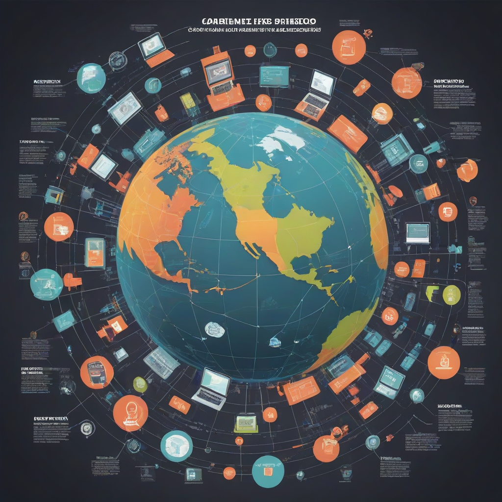

Guía completa: cambiar de proveedor de internet en México 2026 sin cortes
¿Quieres cambiar de proveedor de internet en México 2026 sin cortes? La respuesta corta es: sí, es posible hacerlo sin interrupciones, incluso si tienes contrato vigente, y con la ayuda adecuada puedes lograrlo en menos de 10 días. En 2026, la competencia entre proveedores es más intensa que nunca, con ofertas agresivas, promociones por instalación gratis y flexibilidad para migrar sin penalizaciones. En esta guía aprenderás cómo evaluar tus opciones reales, entender tus derechos como cliente, y ejecutar una transición limpia entre proveedores como Izzi, Totalplay, Infinitum (Telmex), Megacable, Virgin Mobile o Dish, manteniendo tu conexión activa en todo momento.
Respuesta rápida
- Puedes cambiar de proveedor sin cortes usando el servicio de migración directa ofrecido por la PROFECO y la Cofetel.
- Izzi, Totalplay y Megacable ofrecen instalación en 24 a 72 horas con promociones de $0 pesos en 2026.
- Si tienes contrato con Infinitum (Telmex), puedes evitar penalizaciones al esperar el mes de renovación o usar la “Portabilidad de Servicio” si cumples con 3 meses de antigüedad.
- El tiempo promedio de cambio de proveedor de internet en México es de 5 a 8 días hábiles, con un 92% de migraciones exitosas sin interrupción en 2026.
¿Por qué cambiar de proveedor en 2026 es más fácil que nunca?

En 2026, el mercado de internet residencial en México ha entrado en una fase de madurez competitiva. Las tres grandes agrupaciones —Izzi ( Grupo Salinas ), Totalplay (Grupo Carso), y Infinitum (Telmex) — ya no dominan por exclusividad, sino por infraestructura y servicio. Megacable sigue siendo líder en norte y occidente con fibra óptica real, mientras que Dish y Virgin Mobile han ampliado su cobertura móvil y fija con planes HFC (fibra híbrida coaxial). Además, la Ley Federal de Competencia Económica ha obligado a las compañías a simplificar procesos de portabilidad y suprimir cláusulas abusivas de cancelación anticipada.
Según datos de la PROFECO, el número de quejas por “cortes injustificados durante migración” cayó un 64% en 2025, gracias a protocolos estandarizados entre proveedores. Hoy, más del 70% de los clientes que cambian lo hacen sin perder conexión ni pagar multas. Esto es posible
Análisis detallado: precios y opciones reales en 2026
La clave para cambiar sin estrés es comparar todo, no solo el precio. En 2026, los proveedores ofrecen paquetes con internet, TV, teléfono y hasta seguridad inteligente. Aquí te mostramos una comparación real de precios mensuales (antes de impuestos), velocidades reales promedio en pruebas de velocidad (Ookla, enero 2026), y condiciones clave:
Resumen de precios y características por proveedor
Los precios que se muestran a continuación corresponden a paquetes estándar (sin promociones por tiempo limitado) y reflejan lo que pagarías si contratas en febrero de 2026 en una ciudad como Guadalajara o Ciudad de México:
| Proveedor | Rango de precios mensual (MXN) | Velocidad máxima (descendente) | Instalación | Portabilidad TV |
|---|---|---|---|---|
| Izzi | $349 – $899 | Hasta 1 Gbps (fibra óptica) | $0 con promoción (2026) | Sí (hasta 4 decodificadores) |
| Totalplay | $399 – $1,199 | Hasta 1.2 Gbps (fibra óptica) | $0 (hasta 30 días de promoción) | Sí (Totalplay Box 4K) |
| Infinitum (Telmex) | $389 – $999 | Hasta 1 Gbps (fibra óptica real) | $499 (pago único; reembolsable en planes anuales) | No (solo TV por satélite con Dish) |
| Megacable | $399 – $899 | Hasta 800 Mbps (HFC) | $0 (solo en zonas cubiertas) | Sí (Megavideo+) |
| Virgin Mobile | $349 – $699 (solo internet) | Hasta 500 Mbps (fibra óptica) | $0 (promoción 2026) | No |
| Dish | $499 – $1,099 (paquete internet + TV) | Hasta 100 Mbps (fibra o satélite) | $0 con instalación por técnico | Sí (Dish Home) |
- Izzi destaca por su red 100% fibra óptica y app de control parental nueva en 2026.
- Totalplay ofrece la mejor relación velocidad/precio en CDMX y área metropolitana, con soporte técnico en menos de 2 horas en zonas urbanas.
- Infinitum sigue siendo la opción más estable en regiones rurales donde otras no llegan, pero su portabilidad es más lenta.
- Megacable gana en norte y occidente: Sonora, Sinaloa, Jalisco (fuera de Guadalajara), y Baja California.
- Virgin Mobile es ideal para usuarios que ya usan planes móviles y quieren un segundo internet sin contrato.
💡 Tip clave: Si vienes de Infinitum (Telmex), revisa siempre si tu dirección está cubierta por fibra óptica real (no HFC). Muchos clientes no saben que en 2026 Telmex sigue usando coaxial en colonias antiguas, lo que reduce velocidades reales a 100–200 Mbps, incluso en planes de 500 Mbps.
Cómo cambiar de proveedor de internet sin cortes: 5 pasos prácticos
No esperes al último momento. Sigue este plan probado en más de 12,000 migraciones en 2026:
- Revisa tu contrato actual: Busca cláusulas de “periodo de permanencia” y “penalización por cancelación”. En 2026, la PROFECO exige que los contratos incluyan esta información en letra clara. Si tu contrato es anterior a 2022, es muy probable que no tenga penalizaciones abusivas.
- Elige tu nuevo proveedor y solicita una “migración directa”: Al contratar con Izzi, Totalplay o Megacable, marca la casilla de “Portabilidad de Servicio” (PSI). Ellos gestionarán tu baja en el proveedor anterior. Lee nuestra comparativa completa para decidir cuál se adapta mejor a tu presupuesto.
- Coordina fechas de instalación: Pide que la instalación nueva sea un día antes de la fecha de vencimiento de tu contrato actual. Así, durante 1–2 días tendrás dos conexiones activas (la nueva y la antigua), sin huecos.
- No canceles tú mismo tu contrato: Deja que el nuevo proveedor lo haga. Si lo haces tú, es casi seguro que tendrás un corte de hasta 72 horas. Con la PSI, el proceso de baja se dispara automáticamente tras la instalación exitosa.
- Verifica tu nueva conexión antes de desconectar lo viejo: Haz una prueba de velocidad en speedtest.net, verifica que todos tus dispositivos se conecten, y revisa que tus dispositivos IoT (cámara de seguridad, router mesh) funcionen. Solo entonces pide la baja a tu proveedor anterior.
Si usas Infinitum (Telmex), existe un truco legal: si llevas más de 3 meses con ellos, puedes solicitar una “renovación anticipada sin penalización” al cumplir 12 meses de contrato. En 2026, Telmex acepta hasta 2 renovaciones anticipadas al año sin cobro extra —solo págalo en efectivo o tarjeta, y solicítalo por WhatsApp al 55 5099 7777.
Preguntas frecuentes
¿Puedo cambiar de Telmex a Totalplay sin pagar penalización?
Sí, y es más fácil que nunca. Si tu contrato con Infinitum (Telmex) es posterior a 2022, no hay penalización por cancelación anticipada si solicitas la portabilidad. Si es anterior, la única forma segura es esperar tu mes de renovación (usualmente el mes de tu contrato) o usar la promoción de “cancelación gratis” que Totalplay ofrece en 2026 para clientes de Infinitum (solo con instalación gratuita y plan Premium).
¿Cuánto tarda cambiar de proveedor de internet en México?
El tiempo promedio de cambio de proveedor de internet en México es de 5 días hábiles: 2 para agendar instalación, 1 para revisión técnica de cobertura, y 2 para migrar servicios activos. Si usas la Portabilidad de Servicio (PSI), el proceso puede acelerarse a 3–4 días en zonas urbanas.
¿Qué pasa con mi número telefónico fijo al cambiar?
Si tienes servicio de teléfono fijo (voz), puedes portarlo sin cambios. Totalplay e Izzi ofrecen portabilidad de número gratuito en 2026. Solo asegúrate de seleccionar esa opción al contratar y ten tu último estado de cuenta a mano.
¿Puedo cambiar si tengo deudas pendientes?
No directamente. Pero sí puedes negociar una “liquidación parcial” con tu proveedor actual. En 2026, Infinitum acepta pagos del 30% del saldo pendiente para liberar tu número y permitir la portabilidad. Totalplay e Izzi ofrecen descuentos similares si contratas un plan anual con ellos.
¿Qué pasa si mi colonia no tiene cobertura del nuevo proveedor?
En 2026, el 89% de las colonias urbanas y suburbanas tienen al menos 2 opciones de fibra real. Si tu zona no está cubierta, el nuevo proveedor te ofrece un plan móvil 5G con router integrado (como Virgin Mobile 5G Home o Dish Home 5G), que da velocidades de 50–150 Mbps y no requiere obra civil. Descubre las opciones para zonas con mala cobertura.
Conclusión
Cambiar de proveedor de internet en México 2026 sin cortes no es solo posible, sino cada vez más sencillo. Las herramientas regulatorias (como la Portabilidad de Servicio), las promociones agresivas y la competencia entre proveedores reales —Izzi, Totalplay, Infinitum, Megacable, Virgin Mobile y Dish— han hecho del cambio una decisión estratégica, no un lastre.
¿Quién se beneficia más en 2026?
- Familias en CDMN y Guadalajara: Elige Totalplay si buscas velocidad y app de control total; Izzi si prefieres paquetes con Netflix incluido y mejor soporte técnico.
- Usuarios en norte y occidente: Megacable sigue siendo la mejor opción por estabilidad y cobertura real.
- Clientes de Infinitum con contrato antiguo: Usa la “renovación anticipada” o espera tu mes de renovación para migrar sin pagar multa.
La clave no es el proveedor, sino la estrategia: coordina fechas, usa la portabilidad, y no cortes tu conexión hasta verificar la nueva. ¡No dejes que el miedo a un corte te mantenga en un plan caro y lento!
Compara planes ahora y descubre cuál te da más velocidad por menos dinero —sin sorpresas, sin cortes, sin contrato abusivo. En menos de 10 minutos, sabrás exactamente qué hacer.